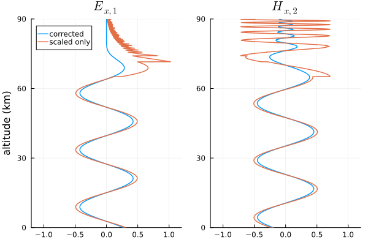
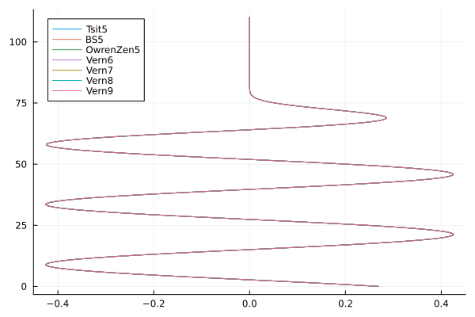
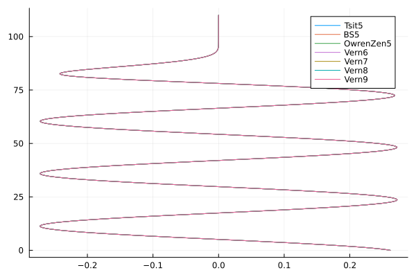

Wavefield integration
The process of mode conversion between two different segments of HomogeneousWaveguide's requires the computation of electromagnetic wavefields from ground to a great height in the ionosphere.
Pitteway (1965) presents one well-known method of integrating the wavefields that breaks the solution for the differential wave equations in the anisotropic ionosphere into solutions for a penetrating and non-penetrating mode. Because of the amplitude of the two waves varies greatly during the integration, Pitteway scales and orthogonalizes the solutions to maintain their independence.
In this example we'll reproduce the figures in Pitteway's paper.
First we'll import the necessary packages.
using CSV, Interpolations
using Plots
using Plots.Measures
using OrdinaryDiffEq
using TimerOutputs
using LongwaveModePropagator
using LongwaveModePropagator: QE, ME
const LMP = LongwaveModePropagatorThe ionosphere
Pitteway uses an ionosphere presented in Piggot et. al., 1965.
He begins with the midday profile with a 16 kHz radio wave at an angle of incidence of 40° from normal. We'll also assume the magnetic field has a strength of 50,000 nT at a dip angle of 68° and azimuth of 111°. Piggott was concerned with a path from Rugby to Cambridge, UK, which, according to the Westinghouse VLF effective-conductivity map, has a ground conductivity index of 8. This can be specified as GROUND[8].
ea = EigenAngle(deg2rad(40))
frequency = Frequency(16e3)
bfield = BField(50e-6, deg2rad(68), deg2rad(111))
ground = GROUND[8]Ground(15, 0.03)
To define the electron density and collision frequency profile, we will read in a digitized table of the curves from Piggott and linearly interpolate them. While we're at it, we'll also prepare the nighttime ionosphere.
root_dir = dirname(dirname(pathof(LongwaveModePropagator)))
examples_dir = joinpath(root_dir, "examples")
data = CSV.File(joinpath(examples_dir, "piggott1965_data.csv"))
# interpolation object
day_itp = interpolate((data.day_ne_z,), data.day_ne, Gridded(Linear()))
day_etp = extrapolate(day_itp, Line())
dayfcn(z) = (v = day_etp(z); v > 0 ? v : 0.001)
# night has some rows of `missing` data
filtnight_z = collect(skipmissing(data.night_ne_z))
filtnight = collect(skipmissing(data.night_ne))
night_itp = interpolate((filtnight_z,), filtnight, Gridded(Linear()))
night_etp = extrapolate(night_itp, Line())
nightfcn(z) = (v = night_etp(z); v > 0 ? v : 0.001)
# so does the collision frequency
filtnu_z = collect(skipmissing(data.nu_z))
filtnu = collect(skipmissing(data.nu))
nu_itp = interpolate((filtnu_z,), filtnu, Gridded(Linear()))
nu_etp = extrapolate(nu_itp, Line())
nufcn(z) = (v = nu_etp(z); v > 0 ? v : 0.001)
day = Species(QE, ME, dayfcn, nufcn)
night = Species(QE, ME, nightfcn, nufcn)Scaled, integrated wavefields
We use the coordinate frame where $z$ is directed upward into the ionosphere, $x$ is along the propagation direction, and $y$ is perpendicular to complete the right-handed system. Where the ionosphere only varies in the $z$ direction, the $E_z$ and $H_z$ fields can be eliminated so that we only need to study the remaining four. The differential equations for the wave in the ionosphere can be written in matrix form for our coordinate system as
\[\frac{\mathrm{d}\bm{e}}{\mathrm{d}z} = -ik\bm{T}\bm{e}\]
where
\[\bm{e} = \begin{pmatrix} E_x \\ -E_y \\ H_x \\ H_y \end{pmatrix}\]
and $\bm{T}$ is the $4 \times 4$ matrix presented in Clemmow and Heading (1954). $\bm{T}$ consists of elements of the susceptibility matrix for the ionosphere (and can be calculated with LongwaveModePropagator.tmatrix).
To compute the wavefields, we calculate them at some height $z$, use $\mathrm{d}\bm{e}/\mathrm{d}z$ to step to a new height, and repeat from a point high in the ionosphere down to the ground. The initial solution comes from the Booker Quartic, which is a solution for the wavefields in a homogeneous ionosphere. At a great height in the ionosphere, we are interested in the two quartic solutions corresponding to upward-going waves. Therefore, we are integrating two sets of 4 complex variables simultaneously. Throughout the integration, the two solutions lose their independence because of numerical accuracy limitations over a wide range of field magnitudes. To maintain accuracy, the wavefields are orthonomalized repeatedly during the downward integration, and the scaling values are stored so that the fields can be "recorrected" after the integration is complete.
Here are what the real component of the $E_{x,1}$ and $H_{x,2}$ wavefields looks like with and without the "recorrection".
zs = 110e3:-50:0
zskm = zs/1000
e = LMP.integratewavefields(zs, ea, frequency, bfield, day; unscale=true)
e_unscaled = LMP.integratewavefields(zs, ea, frequency, bfield, day; unscale=false)
ex1 = getindex.(e, 1)
ex1_unscaled = getindex.(e_unscaled, 1)
hx2 = getindex.(e, 7)
hx2_unscaled = getindex.(e_unscaled, 7)
p1 = plot(real(ex1), zskm; title="\$E_{x,1}\$",
ylims=(0, 90), xlims=(-1.2, 1.2), linewidth=1.5, ylabel="altitude (km)",
label="corrected", legend=:topleft);
plot!(p1, real(ex1_unscaled),
zskm; linewidth=1.5, label="scaled only");
p2 = plot(real(hx2), zskm; title="\$H_{x,2}\$",
ylims=(0, 90), xlims=(-1.2, 1.2), linewidth=1.5, legend=false);
plot!(p2, real(hx2_unscaled),
zskm; linewidth=1.5);
plot(p1, p2; layout=(1,2))
Differential equations solver
Pitteway (1965) used a basic form of a Runge-Kutta integrator with fixed step size. Julia has a fantastic DifferentialEquations suite for integrating many different forms of differential equations. Although wavefields are only computed two times for every transition in a SegmentedWaveguide, we would still like to choose an efficient solver that requires relatively few function calls while still maintaining good accuracy.
Let's try a few different solvers and compare their runtime for the day and night ionospheres.
We can pass IntegrationParams through the LMPParams struct. Where necessary, we set the lazy interpolant option of the solvers to false because we discontinuously scale the fields in the middle of the integration and the lazy option is not aware of this.
TO = TimerOutput()
zs = 110e3:-50:0
solvers = [Tsit5(), BS5(lazy=false), OwrenZen5(),
Vern6(lazy=false), Vern7(lazy=false), Vern8(lazy=false), Vern9(lazy=false)]
solverstrings = replace.(string.(solvers), "OrdinaryDiffEq."=>"")
day_es = []
night_es = []
for s in eachindex(solvers)
ip = IntegrationParams(solver=solvers[s], tolerance=1e-6)
params = LMPParams(wavefieldintegrationparams=ip)
# make sure method is compiled
LMP.integratewavefields(zs, ea, frequency, bfield, day; params=params);
LMP.integratewavefields(zs, ea, frequency, bfield, night; params=params);
solverstring = solverstrings[s]
let day_e, night_e
# repeat 200 times to average calls
for i = 1:200
# day ionosphere
@timeit TO solverstring begin
day_e = LMP.integratewavefields(zs, ea, frequency, bfield, day; params=params)
end
# night ionosphere
@timeit TO solverstring begin
night_e = LMP.integratewavefields(zs, ea, frequency, bfield, night; params=params)
end
end
push!(day_es, day_e)
push!(night_es, night_e)
end
endA quick plot to ensure none of the methods have problems.
day_e1s = [getindex.(e, 1) for e in day_es]
plot(real(day_e1s), zs/1000;
label=permutedims(solverstrings), legend=:topleft)
And at night...
night_e1s = [getindex.(e, 1) for e in night_es]
plot(real(night_e1s), zs/1000;
label=permutedims(solverstrings), legend=:topright)
The times to run each...
TO ───────────────────────────────────────────────────────────────────────
Time Allocations
────────────────────── ───────────────────────
Tot / % measured: 76.1s / 10.2% 12.5GiB / 40.2%
Section ncalls time %tot avg alloc %tot avg
───────────────────────────────────────────────────────────────────────
Vern9(false) 400 1.86s 24.0% 4.65ms 768MiB 14.9% 1.92MiB
Vern8(false) 400 1.19s 15.4% 2.99ms 739MiB 14.3% 1.85MiB
Vern7(false) 400 1.17s 15.0% 2.91ms 744MiB 14.4% 1.86MiB
OwrenZen5() 400 1.03s 13.3% 2.59ms 740MiB 14.3% 1.85MiB
Vern6(false) 400 916ms 11.8% 2.29ms 729MiB 14.1% 1.82MiB
BS5(false) 400 842ms 10.9% 2.11ms 722MiB 14.0% 1.80MiB
Tsit5() 400 736ms 9.50% 1.84ms 716MiB 13.9% 1.79MiB
───────────────────────────────────────────────────────────────────────The Tsit5, BS5, and 6th, 7th, and 8th order Vern methods all have similar performance. In fact, rerunning these same tests multiple times can result in different solvers being "fastest".
We use Tsit5()as the default in LongwaveModePropagator, which is similar to MATLAB's ode45, but usually more efficient.
Why not a strict RK4 or a more basic method? I tried them and they produce some discontinuities around the reflection height. It is admittedly difficult to tell if this is a true failure of the methods at this height or a problem related to the scaling and saving callbacks that occur during the integration. In any case, none of the methods tested above exhibit that issue.
Pitteway figure 2
Let's reproduce the wavefields in figure 2 of Pitteway (1965).
zs = 110e3:-500:50e3
zskm = zs/1000
e = LMP.integratewavefields(zs, ea, frequency, bfield, day; unscale=true)
ex1 = getindex.(e, 1)
ey1 = getindex.(e, 2)
ex2 = getindex.(e, 5)
hx2 = getindex.(e, 7)
function plotfield(field; kwargs...)
p = plot(real(field), zskm; color="black", linewidth=1.5, legend=false,
xlims=(-0.8, 0.8), label="real",
framestyle=:grid; kwargs...)
plot!(p, imag(field), zskm; color="black",
linewidth=1.5, linestyle=:dash, label="imag")
plot!(p, abs.(field), zskm; color="black", linewidth=3, label="abs")
plot!(p, -abs.(field), zskm; color="black", linewidth=3, label="")
return p
end
fs = 10
ex1p = plotfield(ex1; ylims=(49, 81), yaxis=false, yformatter=_->"");
annotate!(ex1p, 0.2, 79, text("\$E_{x,1}\$", fs));
ey1p = plotfield(ey1; ylims=(49, 81));
annotate!(ey1p, 0.2, 79, text("\$E_{y,1}\$", fs));
annotate!(ey1p, -0.98, 83, text("height (km)", fs));
ex2p = plotfield(ex2; ylims=(49, 86), yaxis=false, yformatter=_->"");
annotate!(ex2p, 0.3, 84, text("\$E_{x,2}\$", fs));
hx2p = plotfield(hx2; ylims=(49, 86));
annotate!(hx2p, 0.35, 84, text("\$H_{x,2}\$", fs, :center));
plot(ex1p, ey1p, ex2p, hx2p; layout=(2,2), size=(400,600), top_margin=5mm)
savefig("wavefields_fig2.png"); nothing #hide
The envelopes of the two are very similar. The precise position of the real and imaginary wave components are not important because they each represent an instant in time and change based on the starting height of the integration.
Pitteway figure 3
Figure 3 of Pitteway (1965) uses a different scenario. A wave of frequency 202 kHz is at normal incidence through the nighttime ionosphere presented in Piggott (1965).
First let's set up the new scenario.
ea = EigenAngle(0)
frequency = Frequency(202e3)
bfield = BField(50e-6, deg2rad(68), deg2rad(111))
ground = GROUND[8]Now integrating the wavefields.
zs = 110e3:-50:70e3
zskm = zs/1000
e = LMP.integratewavefields(zs, ea, frequency, bfield, night)
ey1 = getindex.(e, 2)
hx2 = getindex.(e, 7)
ey1p = plotfield(ey1; ylims=(75, 102), title="\$E_{y,1}\$");
hx2p = plotfield(hx2; ylims=(75, 102), title="\$H_{x,2}\$");
plot(ey1p, hx2p; layout=(1,2), size=(400,500))
savefig("wavefields_fig3.png"); nothing #hide
This page was generated using Literate.jl.